Image Classification
KNN (K-nearest neighbors)
Overview
We give the images labels. Say \(y=0\) for cat and \(y=1\) for dog.
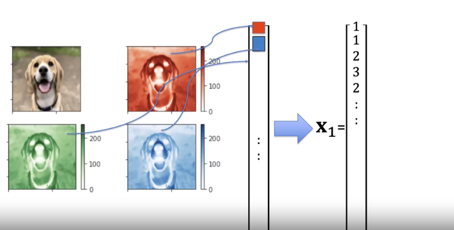
Concatenate the 3 channel images to a vector or use gray scale.
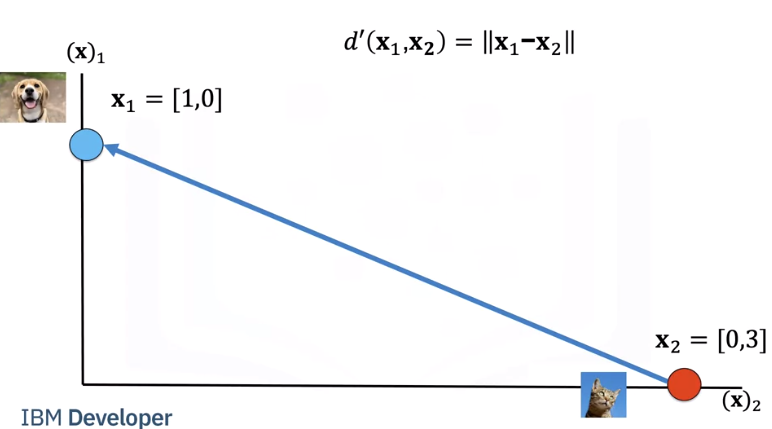
We can calculate the Euclidean distance between two images as i.e the length of the vector connecting the two points.
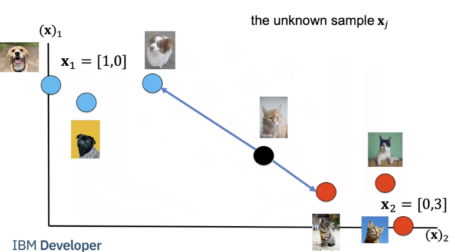
We have a set of images. We will refer to them as training samples. If we have an unknown sample, we calculate the distance between each image.
Let's put the images in a table where each row is a sample, the second column is a class, the final column is the distance from each sample to the unknown point. We will use the distance to predict the label of the unknown class. As this is a guess or prediction of the class we use \(\hat{y}\). The hat means it's an estimate. We calculate the distance from our unknown sample.
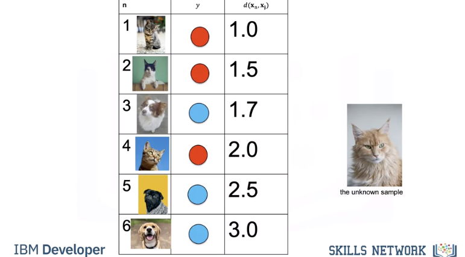
We find the nearest point or nearest neighbour. We assign the label to the unknown sample. We sometimes call this a model. KNN is simple to code yourself or you can use a software package like sklearn.
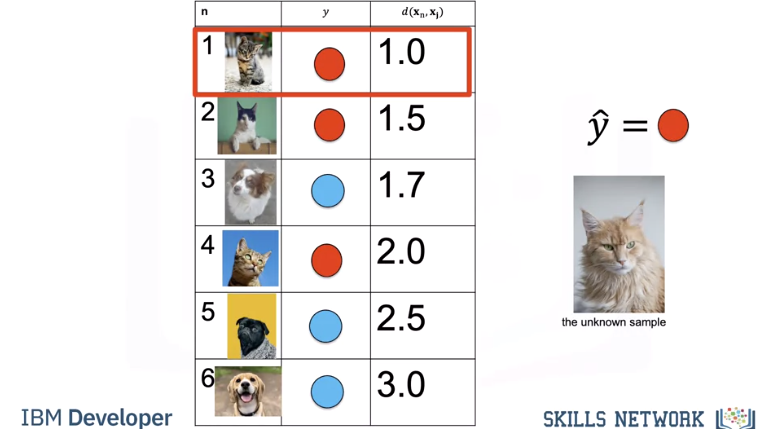
We repeat the process for the next unknown sample.
Test/Train
Accuracy shows us how good our method works i,e the average number of times our model got it correct. Let's use the following table to calculate accuracy on some test data. The first row in the Table denotes different sample numbers; the second row shows the actual class label, the third row is the predicted value and the final row will be one if the sample is predicted correctly or else it will be zero. We count the number of times the prediction is correct, we then take the average to get the accuracy.
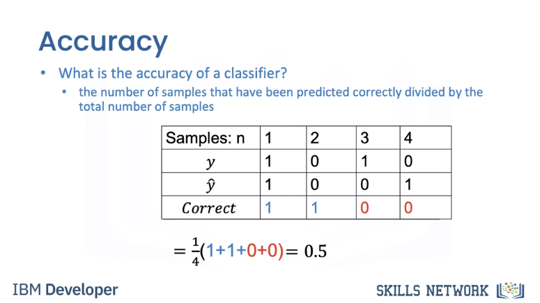
Finding the nearest samples does not always work best, consider the following in our 2d space. The cat is next to a dog that looks like a cat, but all the other samples next to the samples are cats. To handle this we find the K closest samples. We then perform majority vote; where within the sub set we find the class with the most number of samples and assign that label to the unknown sample, Let’s do an example where k=3 As before we calculate the distance.
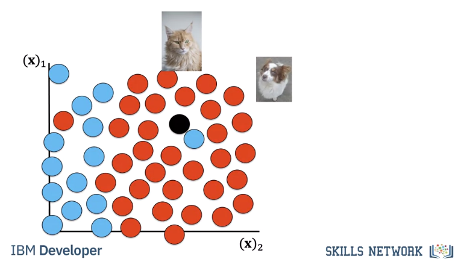
Hyper Parameter K
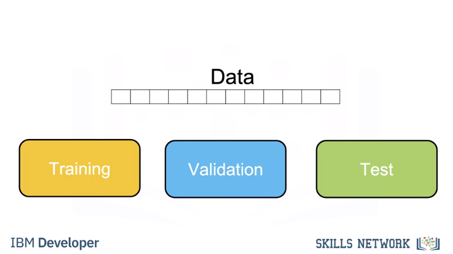
We use a subset called the validation data to determine the best K, this is called a hyper parameter. To select the Hyperparameter we split our data set into three parts, the training set, validation set, and test set. We use the training set for different hyperparameters, we use the accuracy for K on the validation data. We select the hyperparameter K that maximizes accuracy on the validation set.
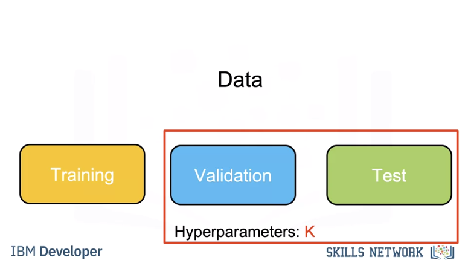
Let’s do an example. In this example we take two samples. We calculate the accuracy for k=1. We calculate the accuracy for k=3. We select k=3 as it has better accuracy.
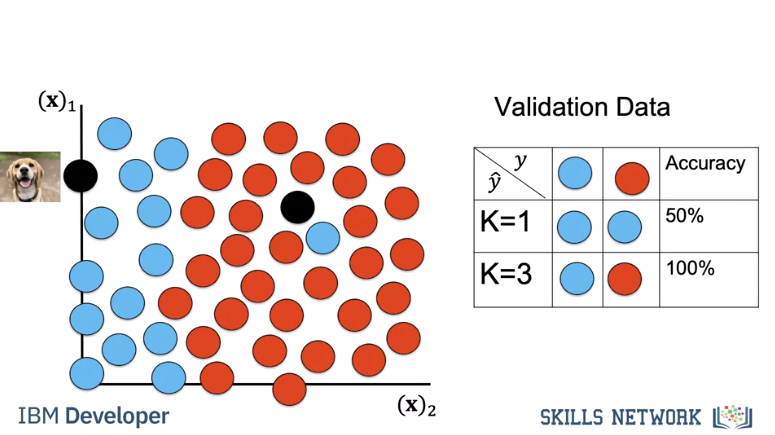
If our dataset has enough samples we expect this accuracy in the real world. Once you choose the value of K you can use KNN to classify an image.
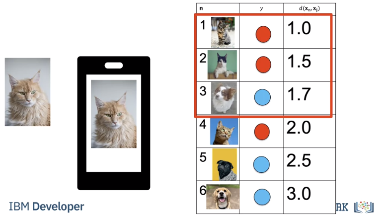
Let's say you build an app to recognize cats and dogs you let k equal to three you take the photo, under the hood your app will calculate the distances find the nearest neighbours and output the class as a string.
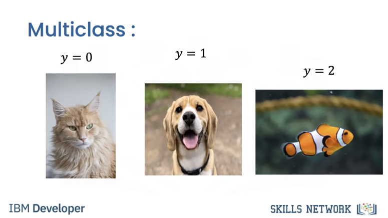
Finally, its simple to add another class, for example fish.
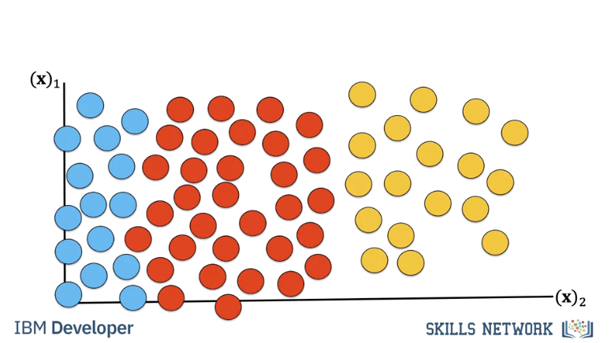
The result would look like this in our 2d space. KNN is not usually used in practice, knn is extremely slow, and it can’t deal with many of the Challenges of Image Classification so let’s learn about other classifiers
Linear Classifier
Linear classifiers are widely used in classification, and they are the building blocks of more advanced classification methods. In this video, we will discuss the two-class case we gave the images labels y equals zero for cat, y equals one for dog.
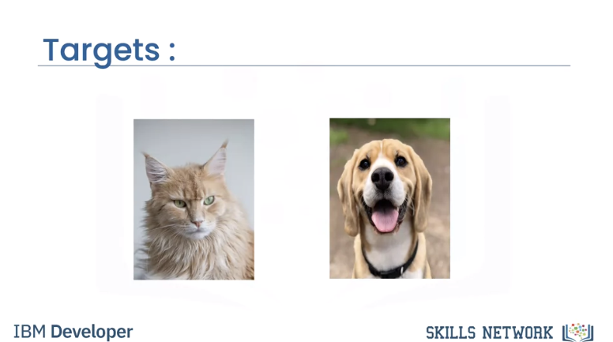
We will concatenate the three-channel images to a vector, or you can do the same for grayscale images. 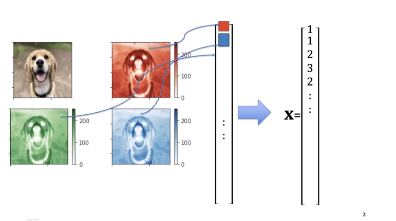
In this video we will show you how a simple function can take an image as an input and output the image class using simple algebra. 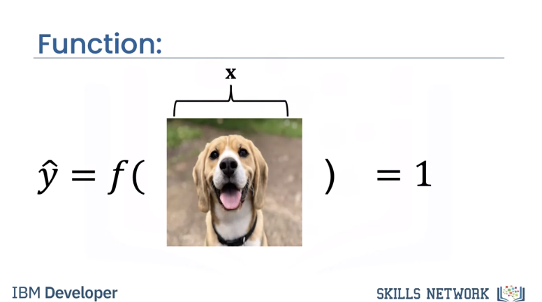
We will also show you how a similar function will take in images and input, and output a probability of how likely that image belongs to a class. For example, here the function gives a 92 percent chance, it's a dog. 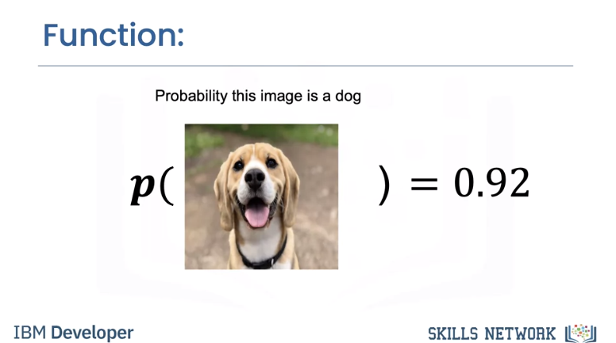
The equation of a line in one dimension is given by the following. Here w represents the weight term and b represents the bias term. These are called learnable parameters, and we will use them to classify the image. For arbitrary dimensions, this equation generalizes to a hyperplane. You can represent this equation as a dot product of row vector w and image x. This is called the decision plane. If you're not familiar with vectors, this is just a compact way to express the equation of a line in dots of dimensions.
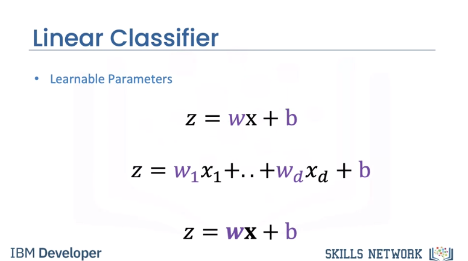
In this video, we will use two dimensions for visualization. Note when the letter x are not bold, it's just simple algebra, not a sample. We will set the weights w_1 to one w_2 to minus one and the bias to one. 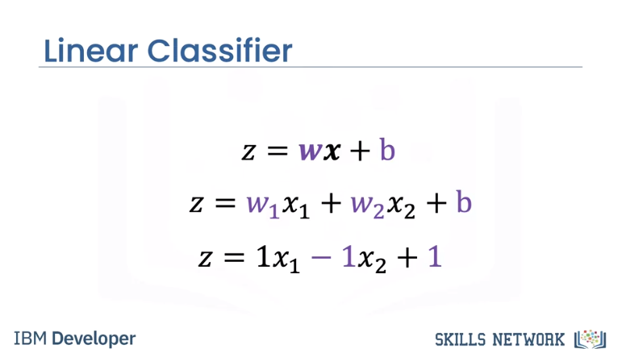
In two dimensions we can plot the equation as a plane. We can plot the plane, z equals zero. We can see the line where the plane intersects with a plane at z equals zero. 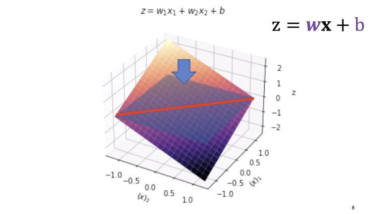
If we look at it from above, we get the following image.
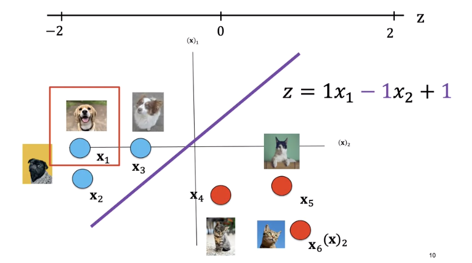
This is the plane where z equals zero, the line is where the decision plane intersects with the planes z equals zero. This line is called the decision boundary.
We can overlay our sample images. Anything on the left side of the line is a dog. Anything on the right side of the line is a cat. Let's see how we can use the value of z to determine if it's a dog or a cat. Let's look at the following sample.
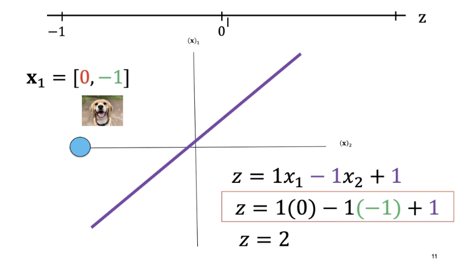
Consider the following values for x_1. We can plug those values into an equation and get a value of z equals two. We see z as positive. 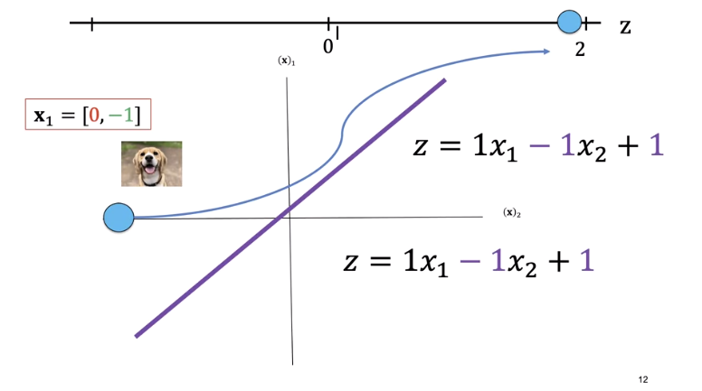
Similarly, for x_2 and x_3, every point on the left side of the line will give you a positive value. 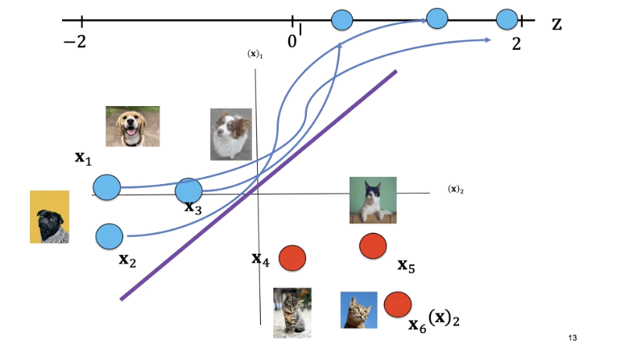
The label for x_4 is a cat and the point lies on the right side of the line. Plugging the value of x into the equation, we see z is negative. Similarly, for sample x_4 and x_6, every point on the right side of the line will output a negative value. 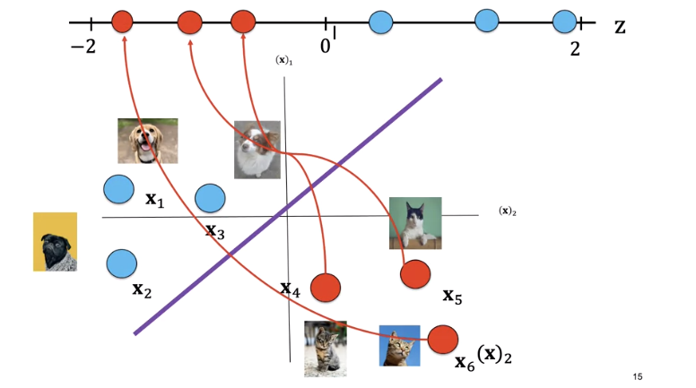
If we use z to calculate the class of the points, it always returns real numbers such as negative one, three, negative two, and so on. But we need a class between zero and one, so how do we convert these numbers? We'll use something called a threshold function pictured here. 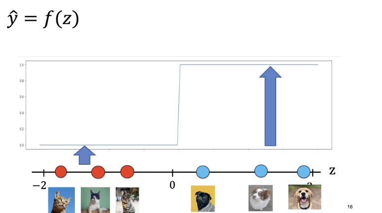
If z is greater than zero, it will return a one, and if z is less than zero, it will return to zero. For the following image, the output is one corresponding to dog. 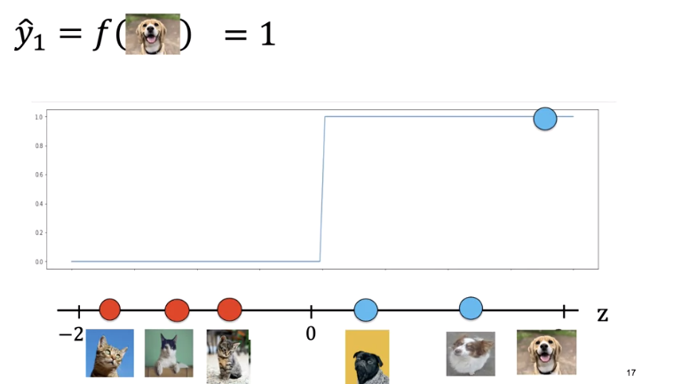
Every sample on this side of the plane will be classified as a cat, every sample on this side of the plane will be classified as a dog. 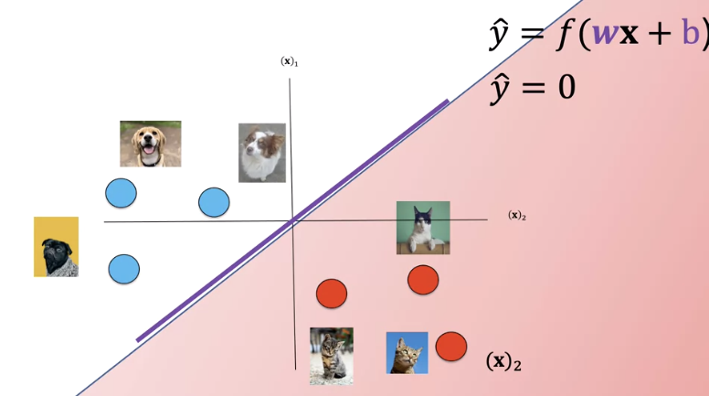
A plane can't always separate the data. The sample is misclassified. In this case, the data is not linearly separable. 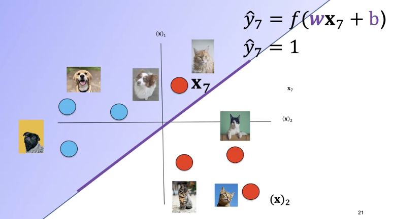
The logistic function resembles the threshold function and is given by the following expression known as the sigmoid function. It will give us a probability of how likely our estimate is. In addition, it has better performance than the threshold function, for reasons we will discuss later. If the value of z is a very large negative number, the expression is approximately zero and for a very large positive value of z, the expression is approximately one. For everything in the middle, the value is between zero and one. 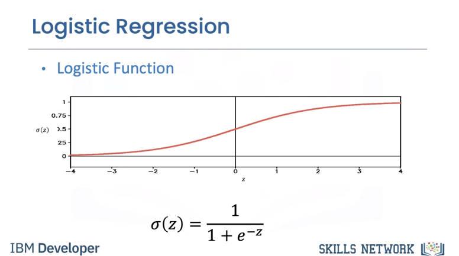
To determine y hat as a discrete class, we use a threshold shown by the line. If the output of the logistic function is larger than 0.5, we set the prediction value y hat to one. If it's less, we set y hat to zero. Let's try out some values of x that we used previously with the linear classification. If we set x equal to zero 0.32 into the equation, we get the value of z as two, we pass the value through the sigmoid function. Since the value of the sigmoid function is greater than 0.5, we set y hat to one. Similarly, if we plug in the value of x as minus two, minus three, the value of z is minus two. We pass the value through the sigmoid function. We see the result is less than 0.5. We set y hat to zero. We can also represent the logistic function as a probability.
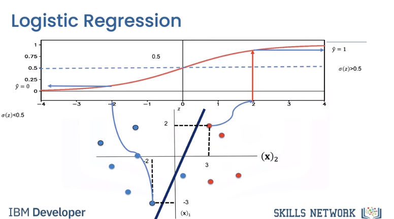
We can find the probability of the image being a dog, that is y hat equals one. We can find the probability of the image being a cat, y hat equals zero by using the following. We see the image is more likely a dog.
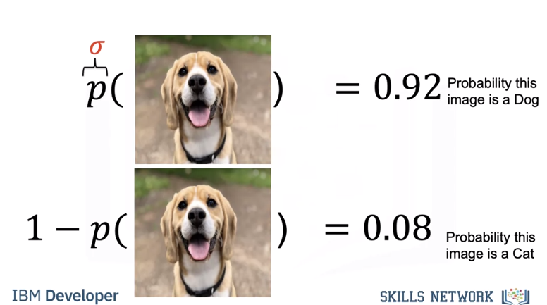
Given the following image, we can find the probability of being a dog y hat equals one. We find the probability of it being cat, that is y hat equals zero. We see the image is more likely a cat. 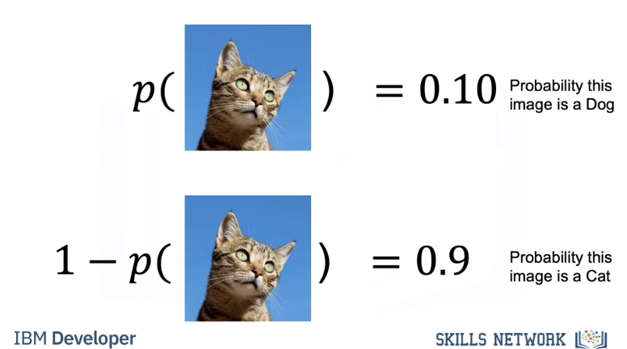
If you have the learnable parameters, you can use a linear classifier, you take the photo. Under the hood, you app will use the linear classifier to make a prediction and output the class as a string.
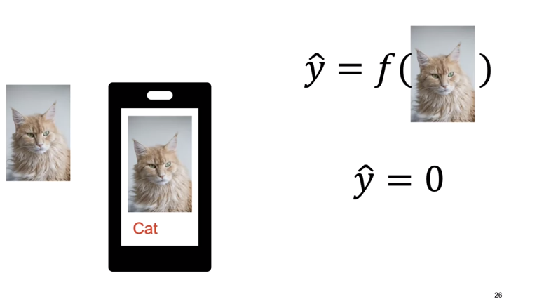